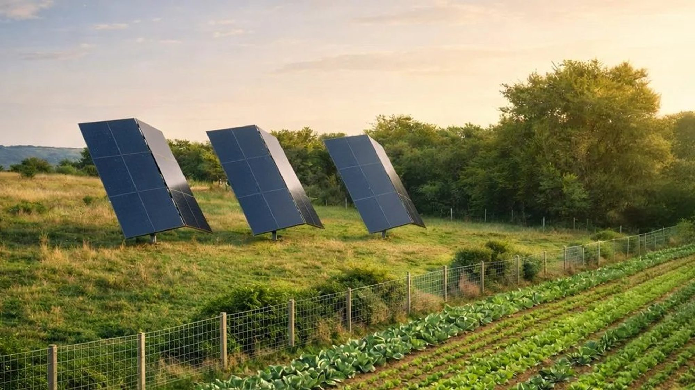
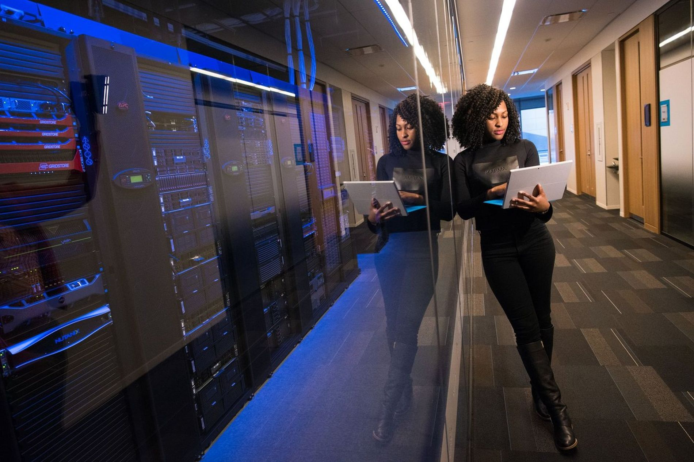
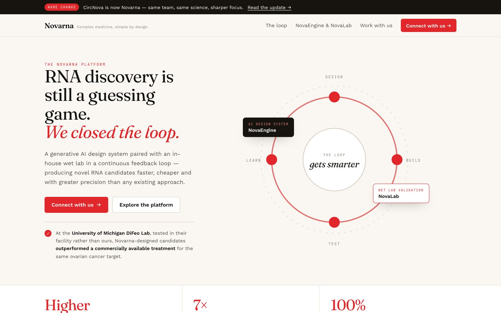
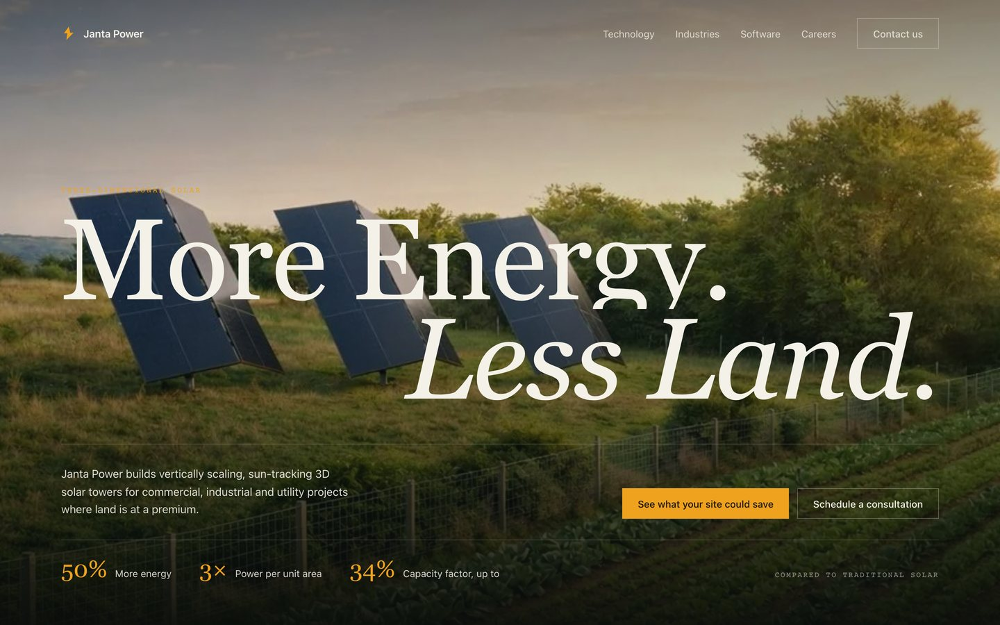
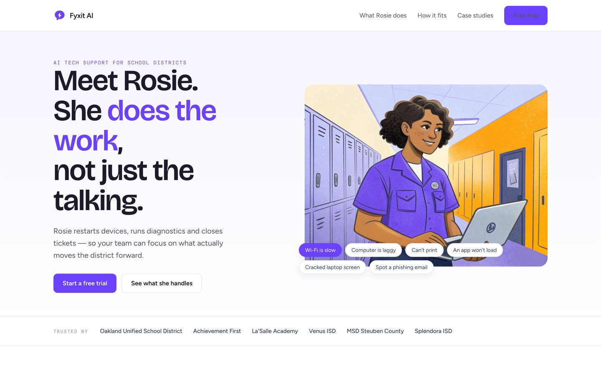

LOVELEEDAY STUDIOS
Intelligence
Intelligence
you can trace.
The object layer for the business you already run.


The object layer for the business you already run.
Give it a question. It decomposes into the questions it has to answer first — which objects the words resolve to, what was known on the date, whether every input carries a source, and whether the action is reversible.
Resolved from four systems.
Each with a source reference.
No wider than what is connected.
Refused at the write path.
Venue operators reduced catering quote turnaround from a multi-day email chain to a same-session workflow. Inventory, recipes, and billing consolidated into a single platform.
MVP in 11 days. Full v1 in 6 weeks.Cross-entity financial data pulled into a single authenticated dashboard, replacing weekly manual reconciliation across three separate vendor portals.
Auth and core routing in 5 days. Full integration in 3 weeks.Inbox-to-action cycle moved from manual review to automated routing with human-in-the-loop confirmation, across every communication channel.
Core pipeline in 3 weeks.Invoice-to-payment moved from multi-day manual follow-up to an automated collect-on-send flow, with outstanding invoice tracking consolidated into a single view.
Functional billing flow in 7 days.A web presence that matches the bar's physical aesthetic. Guests move from discovery to reservation without leaving the site.
Design to production in 3 weeks.
A platform in the middle of a rename, with the old name still on its investor's portfolio page. The rebuild leads with…

A hardware company whose site read as a brochure. The rebuild puts the economics in the hero and takes its palette fro…

A product whose whole claim is speed, sold behind an illustrated mascot. The rebuild makes the hero the conversation t…